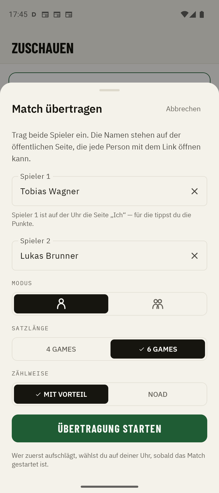
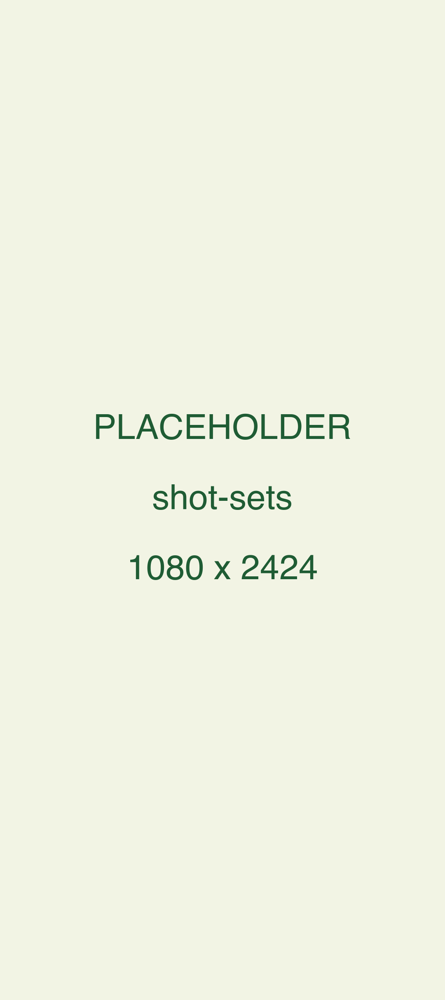
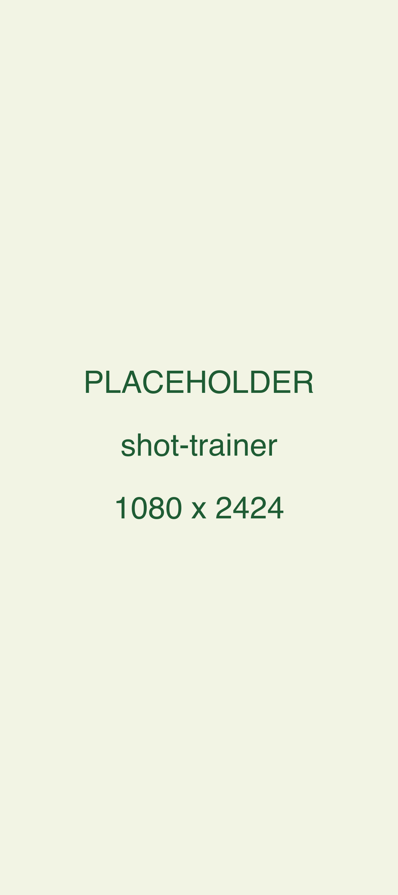

Ein Tipp pro Punkt auf der Uhr, bei deinem Match oder jedem anderen. Alle schauen live zu, per Link, ohne App. Danach: die ganze Auswertung, bis zum Trainer-Urteil.
Warum Kortscore
Kortscore will nicht alles können. Es überträgt Tennis live: deine Matches und jedes andere. Und es zählt mit einem Tipp, um dir danach die tiefste Auswertung deines Spiels zu geben.
Die Uhr zählt, ein Link bringt den Spielstand zu allen. Ohne App und ohne Konto für die Zuschauer.
Ein Tipp ist die ganze Bedienung. Danach fehlt nichts: jeder Punkt, jeder Druckmoment, und ein Trainer, der daraus liest, was du trainieren sollst.
01 Während des Matches
Aufschlag. Die Uhr ist bereit, du musst nur noch spielen.
Bei eigenem Aufschlag den letzten Tipp halten: 1 kurz + 1 lang = Ass, 2 kurz + 1 lang = Doppelfehler. Die Haptik antwortet beim Loslassen.
02 Auf dem gekoppelten Handy
Die Uhr zählt, dein eigenes gekoppeltes Handy zeigt mit. Über Bluetooth, ohne Internet. Perfekt, wenn am Zaun jemand mitschaut.
03 Für alle anderen
Vom Handy aus teilst du das laufende Match als Link. Familie und Freunde schauen live zu, im Browser oder in der App, ohne eigenes Konto.
Am Meisterschaftstag teilt jede und jeder das eigene Match in die Mannschaftsgruppe. Wer alle Links öffnet, hat jeden Platz auf einem Bildschirm: Niemand muss mehr fragen, wie es steht.
04 Fremdes Match
Das Turnier deines Kindes, das Finale einer Freundin: Du sitzt am Zaun, zählst am Handy mit, und alle, die nicht kommen konnten, schauen live zu. Eine Uhr brauchst du dafür nicht, die Spieler brauchen weder App noch Konto.


05 Nach dem Match
Jeder Punkt wird mitgeschrieben. Daraus wird mehr als ein Endergebnis: Breakbälle, Satz- und Matchbälle, Einstand-Games, längste Serie, die Punkte also, an denen das Match entschieden wurde.
Über allen Matches steht die Gesamtstatistik: Siegquote, Form, Bilanz nach Wochentag und Tageszeit, Einzel und Doppel getrennt.
06 Dein Trainer Kortscore Plus
Der Kortscore Trainer liest dein Match, jeden Breakball und jede Serie, und sagt dir in kurzen Sätzen, was du verbessern sollst.
Analyse passiert lokal (auf unterstützten Geräten) oder über Google Firebase.

07 Was die App kostet
Kortscore kostet nichts und zeigt keine Werbung: kein Banner, kein Werbe-SDK, für alle gleich. Wer tiefer graben will, holt sich Kortscore Plus: einmaliger Kauf, kein Abo.
| Funktion | Gratis | Plus |
|---|---|---|
| Keine Werbung | ||
| Punktestand über die Uhr eintragen | ||
| Unbegrenztes Match-Archiv | ||
| Ergebnis und Basis-Statistik jedes Matches | ||
| Live-Teilen: Link, Zuschauen, Punkteverlauf | ||
| Fremdes Match übertragen vom Spielfeldrand, Live-Link inklusive | ||
| Manuelles Backup und Wiederherstellen | ||
| Ausführliche Statistiken Druckpunkte, Statistik pro Satz, Uhr-Akku, Punkteverlauf | ||
| Matchverlauf Satz für Satz, Spiel für Spiel | ||
| Auto-Backup sichert das Archiv unbeaufsichtigt | ||
| Kortscore Trainer KI-Match- und Karriere-Analyse, direkt am Gerät |
Plus ist ein einmaliger Kauf, kein Abo. Er gilt dauerhaft, nach einer Neuinstallation stellt ihn die App still wieder her. Das Ergebnis deines eigenen Matches verkaufen wir dir nicht zurück, und dich vor Datenverlust zu schützen kostet nie Geld: Plus kauft nur die Bequemlichkeit, dass das Backup von allein passiert.
08 Datenschutz
09 Welche Uhr
Kortscore läuft auf jeder Wear-OS-3-Uhr. Wer noch sucht: Diese drei machen ihre Arbeit auf dem Platz.

Wear OS 6, in direkter Sonne lesbar, Akku für ein langes Matchprogramm.
Bei Amazon ansehen
Robustes Gehäuse, größter Akku der drei, für lange Turniertage im Freien.
Bei Amazon ansehenWear OS direkt von Google, bekommt Updates zuerst. Kompakt am Handgelenk.
Bei Amazon ansehenAls Amazon-Partner verdienen wir an qualifizierten Verkäufen.
Kostenlos & werbefrei
Kortscore kostet nichts, zeigt keine Werbung und braucht kein Konto. Installieren, Uhr koppeln, loszählen: dein Match oder das vor deinen Augen. Deine Freunde und deine Familie brauchen weder Uhr noch App: zum Mitschauen genügt der Link im Browser.

Öffnet den Play Store. Fragen vor dem Installieren? swordistudios@gmail.com